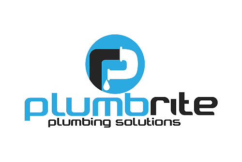

Plumbrite plumbing solution Cape Town
Welcome to the home of Cape Town's trusted Plumbing Service Company
We offer blumbing maintainance services in and around Cape Town area, including a 24-hour plumbing emergency service, leak detection, solar
installation, bathroom renovation, as well as contraction blumbing. No job is too big or small for RC Bosman Plumbing. We operate throughout
the Festive season and also on all public holidays.
We currently have a staff compliment of 75 and strive towards creating further job opportunities, empowering our staff with up to date knowledge of plambing installation while maintaining high levels of
workmanship. R.C Bosman Plumbing is a leading plumbing company in Cape Town specializing in domestic and commercial maintainance and contraction plumbing.
RC Bosman Plumbing is a member of the Master Builders Association as well as The Institute of Plumbing SA. We are also members of SESSA, SEESA and the Plumbing Registration Board. No job is too big
or small and we guarantee fast and efficient service with a 12 month guarantee on all workmanship.
website designed by 121407 ® © All right Reserved 2017